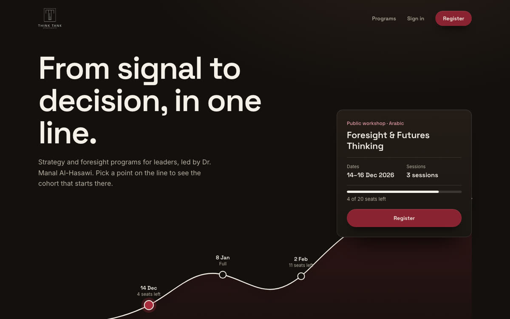
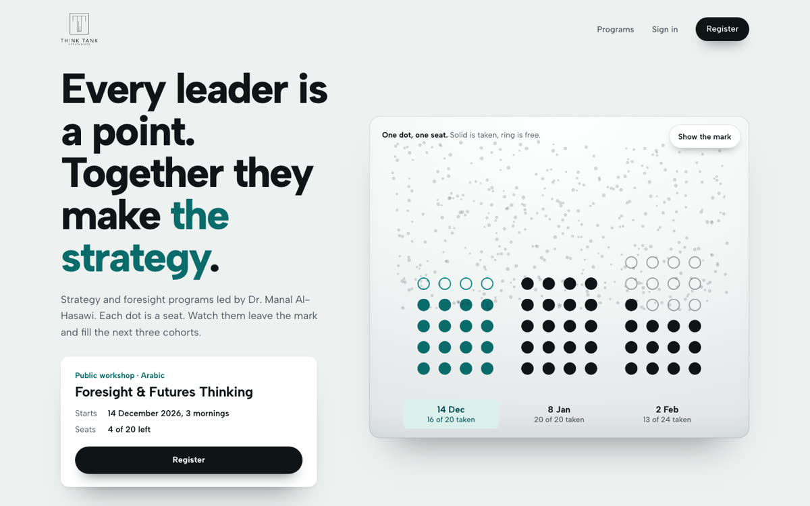
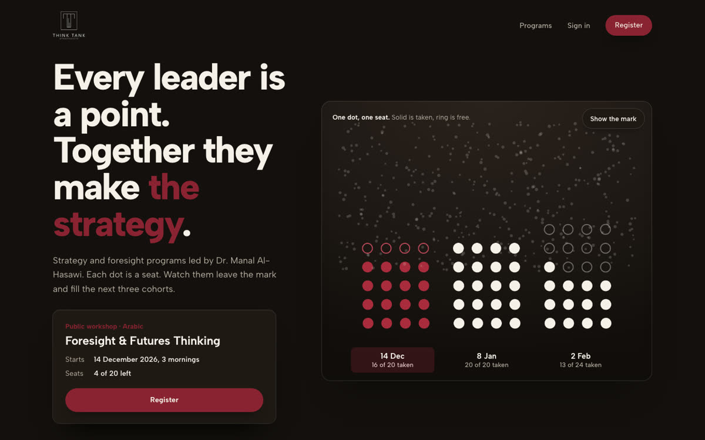

The line
Her own colors. The mark is drawn in one line, so the identity is one line: it starts at today and rises through the coming cohorts.
Open the presentation

The mark assembles
Quiet white, graphite and deep teal. Hundreds of points draw her mark, then regroup into the seats of the next cohorts.
Open the presentation

The mark, in her colors
The structure and motion of The mark assembles, in her own espresso, cream and oxblood. The points draw her mark, then regroup into the seats of the next courses.
Open the presentation